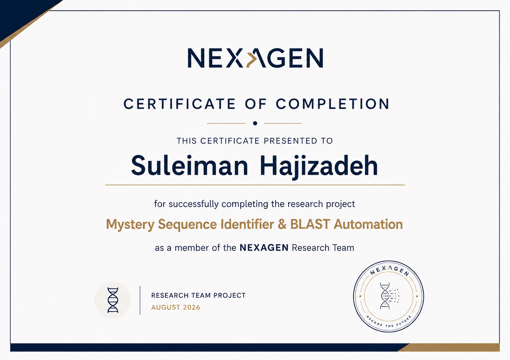

Mystery Sequence Identifier & BLAST Automation (RTP)
🏛️ NEXAGEN (Decode The Future)
NEXAGEN Tədqiqat Qrupunun üzvü olaraq naməlum ardıcıllıqların identifikasiyası və BLAST alqoritminin avtomatlaşdırılması üzrə elmi tədqiqat layihəsi.